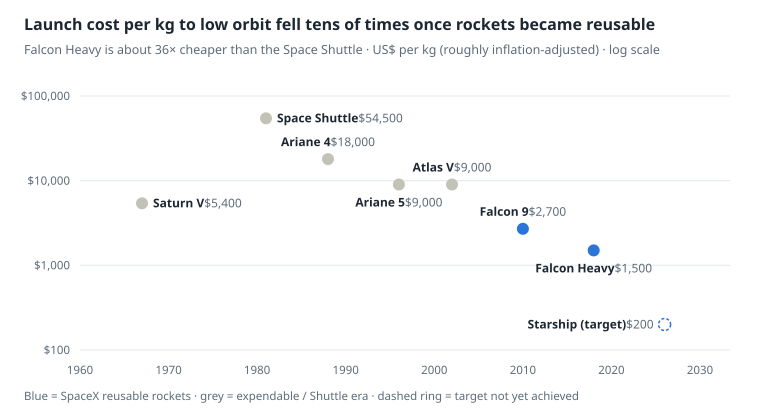
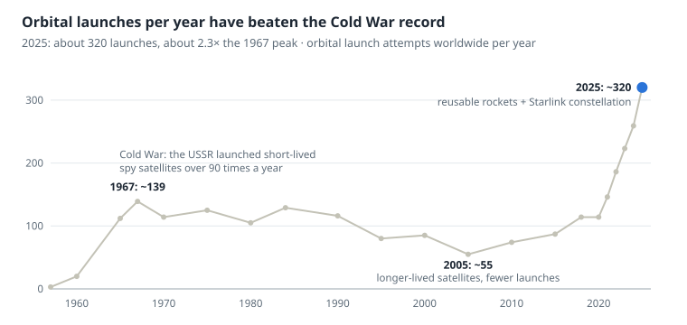

The space industry and satellites: an overview for experimenters
The global space economy is worth about 600 billion US dollars a year, and more than half of it comes from services on Earth that use satellite data or signals, not from rockets. The figures in this document are approximate, from general industry knowledge, and have not been checked against original sources one by one. Use them to see proportions and orders of magnitude.
1. What the space industry covers today
Roughly, it splits into upstream (building things and sending them up) and downstream (using what is up there). Downstream is the largest and fastest-growing part.
| Segment | What it does | Examples from everyday life |
|---|---|---|
| Launch | Carries satellites, people and cargo to orbit | Cheaper launches made large numbers of small satellites possible |
| Satellite and spacecraft manufacturing | Designs, builds and tests satellites and parts | Radiation-tolerant chips, solar arrays, antennas |
| Communications (SatCom) | Internet, satellite TV, satellite phones | Starlink, satellite-dish TV, satellite SOS on phones |
| Navigation (GNSS) | Broadcasts time and position signals | GPS in maps, ride-hailing, deliveries, bank timestamps |
| Earth observation | Optical, radar and infrared imaging | Weather forecasts, crop insurance, city planning, wildfire detection |
| Space stations and experiments | Weightless labs, special materials | ISS, Tiangong, private stations under construction |
| Space exploration | Missions to the Moon and Mars, telescopes | Artemis, JWST |
| Security and defence | Military satellites, missile warning | Mostly government-funded |
| In-orbit services | Refuelling, repair, towing dead satellites, debris removal | A new segment just getting its first customers |
| Ground segment and software | Receiving stations, AI image analysis | Platforms selling imagery and analytics |
2. On Earth versus in orbit: effects on electronics and food
The main enemies of chips in space are radiation and heat that cannot be carried away. The main enemies of food are long storage and the lack of gravity. That is why every part has to pass tests on Earth that simulate space before it flies.
| Factor | On Earth | In low Earth orbit (LEO) | Effect on electronics | Countermeasures |
|---|---|---|---|---|
| Radiation | Blocked by the atmosphere and magnetic field | High-energy particles from the Sun and cosmos, Van Allen belts | Bit flips (SEU), gradual transistor degradation (TID), burn-out from latch-up | Rad-hard chips, ECC memory, three computers voting, watchdog restarts |
| Temperature | Air carries heat away (fans) | About +120°C in sunlight and −150°C in shadow, alternating every ~90 minutes | Fans do not work; heat leaves only by conduction and radiation; solder joints crack from expansion | Radiators, gold MLI blankets, heaters, heat pipes |
| Vacuum | 1 bar of pressure | Almost no air | Plastics outgas onto lenses, tin whiskers grow, metal parts stick together (cold welding) | Low-outgassing certified materials, bake-out, leaded solder |
| Launch vibration | None | Several g of shaking and intense noise in the first 10 minutes | Broken chip leads, cracked crystals | Shaker-table testing, epoxy staking |
| Atomic oxygen (200–600 km) | None | Erodes plastics and surfaces | Films and wiring degrade | Erosion-resistant coatings |
| Debris and micrometeoroids | None | Tiny fragments at ~7–10 km/s | Holes in solar arrays, cut wires | Whipple shields, avoidance manoeuvres on warning |
Rad-hard chips are usually several generations slower than desktop chips but tens of times more expensive. The RAD750 processor used on Mars rovers is comparable to a late-1990s CPU but costs hundreds of thousands of baht per board. Small satellites and Starlink take the opposite route: cheap commercial chips plus error-correcting software and multiple redundancy, because they sit in low orbit where radiation is lower and lifetimes are shorter.
Food and biological experiments
| Issue | What happens in space | How it is handled |
|---|---|---|
| Floating crumbs | Bread crumbs drift into equipment and eyes | Tortillas instead of bread, sticky sauces, liquid salt and pepper |
| Food tastes bland | Body fluids shift to the head, giving a blocked nose like a cold | Astronauts favour spicy, sour food and chilli sauce |
| Shelf life | A Mars mission needs food that lasts 3–5 years; some vitamins break down quickly under radiation | Freeze-drying, thermostabilisation, oxygen-barrier packaging |
| Growing plants | Water does not drain; roots drown or dry out and grow towards light instead of down | The Veggie unit on the ISS uses soil pillows and red-blue LEDs |
| Germs | Some bacteria become more aggressive in weightlessness and astronauts' immunity weakens | HACCP food-safety standards, which NASA actually helped invent in the 1960s and which became the norm in food factories worldwide |
Weightlessness also has benefits. Protein crystals for drug development grow more evenly, and companies are experimenting with making ZBLAN optical fibre and semiconductor crystals in orbit, because there is no sedimentation or convection to distort the crystals.
3. What is inside a satellite
Every satellite has two parts: the payload, the equipment that does the mission (cameras, communication antennas, atomic clocks), and the bus, the spacecraft that keeps the payload running. Think of a smartphone: battery, antenna and CPU are the bus, and the camera is the payload.
Types by use
| Type | Common orbit | Main payload |
|---|---|---|
| Communications | LEO 550 km (large constellations) or GEO 35,786 km (large satellites that stay over one spot) | Phased-array antennas, transponders, laser links between satellites |
| Earth imaging | LEO sun-synchronous orbit (SSO), 500–800 km | Visible-light cameras, multispectral/hyperspectral imagers, SAR radar |
| Weather | GEO (same region every 10 minutes) + polar LEO | Infrared and microwave radiometers, GPS radio-occultation receivers |
| Navigation | MEO ~20,000 km | Atomic clocks, L-band transmitters |
| Science / astronomy | LEO, or L2 1.5 million km away | Telescopes, particle detectors |
| Technology demonstration (IOD) | Low LEO | New parts that need to prove they work in space |
| Crew / cargo vehicles | LEO 400 km to the station | Life support, a heat shield for the return, docking systems |
Bus subsystems and sensors
| Subsystem | Job | Sensors and hardware |
|---|---|---|
| ADCS, attitude control | Points cameras and antennas the right way, to thousandths of a degree | Star trackers, sun sensors, magnetometers, gyroscopes; actuators are reaction wheels and magnetorquers |
| GNC, navigation | Knows position and velocity | Space-grade GPS receivers (unlocked from the 515 m/s speed limit placed on civilian units) |
| EPS, power | Generates, stores and distributes power | Solar arrays, lithium batteries, MPPT circuits, current and voltage sensors |
| OBC, on-board computer | The satellite's brain, deciding for itself when out of ground-station range | MCU/FPGA, dozens of temperature sensors |
| COMMS | Receives commands (uplink) and sends data (downlink) | UHF/S/X/Ka-band radios and antennas |
| Thermal control | Keeps the battery at 0–30°C | Thermistors, heaters, radiators |
| Propulsion | Keeps and adjusts the orbit, dodges debris | Hydrazine thrusters, ion/Hall thrusters (xenon, krypton, argon) |
| Structure | Takes the launch loads and holds everything together | See the materials table below |
Structural materials
| Material | Where it is used | Why |
|---|---|---|
| Aluminium 6061/7075 | CubeSat frames, mounting plates | Light, easy to machine, cheap |
| Aluminium honeycomb sandwich | Walls of medium and large satellites | Very stiff for its weight |
| Carbon fibre (CFRP) | Camera structures, array arms, rocket tanks | Almost zero thermal expansion, so the camera stays sharp |
| Titanium | High-pressure propellant tanks, fasteners | Strong and heat-resistant |
| Zerodur/ULE glass-ceramics, beryllium | Telescope mirrors | Keep their shape when temperature changes |
| MLI blankets (multi-layer aluminised Kapton) | Wrapping the satellite (the gold you see) | Block heat in and out |
| 304L stainless steel + heat-shield tiles | The Starship rocket body | Cheap, easy to weld, stronger at low temperature |
4. Why satellites come in many sizes, and what tiny satellites do
Size is set mainly by the physics of the payload: a camera's sharpness depends on its aperture, and signal strength depends on antenna size and power. Tiny satellites win on numbers and revisit frequency; big satellites win on sharpness and power.
| Class | Mass | Size comparison | Used for | Satellite cost (approx.) |
|---|---|---|---|---|
| PocketQube / ChipSat | 0.01–0.5 kg | A 5 cm box or a single circuit board | Education, chip testing | Tens of thousands of dollars |
| CubeSat 1U | ~1.3 kg | A 10 cm cube | University satellites, amateur radio, sensor tests | $50,000–150,000 |
| CubeSat 3U–16U | 4–25 kg | Bread box to suitcase | 3–5 m imaging (Planet Dove), ship tracking (AIS), IoT, weather (Spire) | $0.5–5 million |
| Microsat | 10–100 kg | A small fridge | SAR radar (ICEYE, Capella), 50 cm imaging (SkySat) | $5–30 million |
| Smallsat | 100–500 kg | A household fridge | Starlink V2 mini (~800 kg, slightly over), Pelican, resource satellites such as THEOS-2 | $0.5 million (mass-produced) to $100 million |
| Large satellite | 1,000–6,500 kg | A bus, with arrays spanning 30–40 m | GEO communications, GOES/Himawari weather, 30 cm imaging (WorldView) | $150–500 million |
| Science flagship | 6,000+ kg | A building | JWST, Hubble | $1–10 billion |
The tiny satellites you see most often do one of four things:
- In-orbit demonstration (IOD) of new technology such as AI chips, small ion engines or laser communications, before it goes into a large satellite a thousand times more expensive, because companies rarely accept parts without flight heritage.
- Frequent imaging. Planet's flock of 200 satellites images all of Earth's land almost every day, though less sharply than large satellites.
- Listening to radio from Earth, such as ship AIS, aircraft ADS-B and IoT sensors on farms.
- Education. They can be designed in 1–2 years from off-the-shelf parts and ride spare seats on rockets (rideshare), for example Falcon 9 Transporter missions starting at about $6,000 per kg.
5. How spacecraft stay in orbit without falling or flying away
A satellite does not "float". It is "falling all the time but missing the Earth" because it moves sideways fast enough. At 400 km it needs about 7.67 km/s (once around Earth every ~92 minutes). Slower, and it gradually sinks; faster than 11.2 km/s, and it leaves Earth.
v = √(GM / r) T = 2π √(r³ / GM)
What pulls a satellite out of its orbit
| Perturbation | Where it matters | Effect |
|---|---|---|
| Air drag | Below ~600 km | Altitude drops every day; the ISS sinks about 2 km a month. Solar storms make the atmosphere swell: in February 2022 Starlink lost 38 satellites to a geomagnetic storm |
| Earth's oblateness (J2) | Every orbit | The orbital plane slowly rotates; engineers use this to make sun-synchronous orbits that pass over each place at the same time every day |
| Moon and Sun | GEO | Pull the orbit north-south; correcting it takes ~50 m/s per year |
| Solar radiation pressure | Satellites with large arrays for their mass | Nudges the position little by little |
How orbits are maintained (station-keeping)
- Fire forward to speed up (prograde burn) when the altitude drops below a threshold. The ISS uses the engines of docked cargo ships; Starlink uses Hall thrusters that run for a long time at low thrust.
- Reduce the area facing the flow by turning the solar arrays edge-on to the air (the "open book" attitude) when the atmosphere swells.
- Fly higher. Satellites without engines usually sit at 500–600 km, which lasts several years but no more than 25 years under debris-mitigation rules (the US FCC has cut this to 5 years after the end of the mission).
- Dodge debris. Space-tracking agencies send warnings when a collision probability is high; Starlink makes tens of thousands of automatic avoidance manoeuvres a year.
- End of life. Low LEO satellites are lowered to burn up in the atmosphere; GEO satellites are pushed up to a "graveyard orbit" ~300 km higher because they cannot come down.
You can see this in the simulation (last section): switch the engine off and watch the satellite slowly fall, or speed up past 11.2 km/s and watch it escape.
6. How power and signals in space differ from Earth
Space has no power sockets and no nearby cell towers, so every watt and every bit is expensive. A LEO satellite spends about 35 minutes in Earth's shadow every orbit and sees each ground station for only 5–10 minutes at a time.
| Topic | On Earth | In space |
|---|---|---|
| Power source | Power plants, 220 V AC mains | Solar arrays only (sunlight stronger than at ground level, ~1,361 W/m², with no clouds); deep-space probes use RTGs powered by plutonium-238 heat |
| Solar cell type | Silicon, ~22%, cheap | Triple-junction gallium arsenide, ~30%, radiation-tolerant but about 100× more expensive per watt; Starlink uses silicon to cut cost |
| Energy storage | Batteries charged once a day | Lithium batteries cycle ~5,500 times a year, so only 20–30% of capacity is used to make them last for years |
| Power bus | High-voltage AC | 28 V DC (older satellites), 100 V (new large satellites), 3.3/5 V (CubeSats) |
| Heat from electronics | Removed by fans | Every watt used becomes heat that must be radiated away by radiators |
| Link distance | Wi-Fi 50 m, mobile 1–30 km | LEO 550–2,000 km, GEO 36,000 km (round-trip delay ~0.5 s) |
| Antennas | Fixed masts | Satellite antennas and ground dishes must track each other; phased arrays steer the beam electronically with no moving parts |
| Signal distortion | Small | Doppler shifts of tens of kHz at 7.5 km/s need constant frequency correction; heavy rain absorbs Ka-band (a big issue in Thailand's rainy season) |
| Frequencies | Allocated nationally (by the NBTC in Thailand) | Must be registered with the ITU worldwide and licensed in every country served |
| Interconnection | Fibre-optic cable | Laser inter-satellite links (optical ISL) relay data from satellite to satellite before reaching the ground; light in vacuum is ~30% faster than in glass fibre |
7. How satellites photograph the same city sharply despite speed and clouds
Short answer: control the orbit so it passes the same place at the same time, use sensors that accumulate light at the ground speed, and use radar when clouds are in the way. Almost nobody cleans the lens, so the focus is on keeping it clean in the first place.
| Problem | Why it is hard | What is actually done |
|---|---|---|
| High speed | The ground point moves ~7 km/s; a 50 cm image blurs if the shutter is open longer than ~70 microseconds | Push-broom sensors that capture one line at a time like a scanner, TDI that accumulates light over several lines as the scene moves, rotating the satellite to compensate (back-scan) |
| Satellite vibration | Spinning reaction wheels cause small vibrations (jitter) | Isolation mounts, switching some wheels off during imaging, high-accuracy star trackers |
| Comparing the same place | Camera angle and shadows differ every time | Sun-synchronous orbits pass at the same local time (for example 10:30) every time; orthorectification with an elevation model (DEM) and pixel co-registration before AI looks for changes |
| Clouds | Tropical places like Thailand are very cloudy in the monsoon | SAR radar sees through clouds and at night; imaging often and stitching cloud-free pixels (cloud-free mosaic) |
| Smoke and haze | Wash out colours | Atmospheric correction, short-wave infrared (SWIR) bands |
How dirty lenses are cleaned
Space has none of the dust and water spots we have on Earth. The real contamination is vapour from the satellite itself settling on the optics, and water freezing onto very cold mirrors.
- Assemble in a cleanroom (ISO 5–8) and bake out the vapour in a vacuum chamber before launch.
- Lens covers stay closed during launch and the early period of heavy outgassing, and open weeks later.
- Sun shades and long baffles block direct sunlight and micrometeoroids.
- Heat the optics (decontamination) when sensitivity drops, so the ice sublimates; the Gaia telescope did this several times.
- On-orbit calibration: image the Moon, deserts or a reference plate inside the camera, and let software compensate for lost sensitivity.
- If it really breaks, usually nothing can be done. Hubble is the exception: astronauts fitted corrective optics in 1993. Today a replacement satellite is usually launched instead of a repair.
8. Example companies in each segment
| Segment | International companies | In Thailand / ASEAN |
|---|---|---|
| Launch | SpaceX, Rocket Lab, Blue Origin, ULA (Boeing + Lockheed), Arianespace, ISRO, CASC (China) | None yet; foreign launch services are used |
| Large satellite builders | Airbus Defence and Space, Thales Alenia Space, Boeing, Lockheed Martin, Maxar, Northrop Grumman | Thailand hired Airbus to build THEOS-2 with technology transfer |
| Small satellite / component builders | Surrey Satellite (SSTL), Terran Orbital, Apex, EnduroSat, GomSpace, ISISpace | mu Space, NBSpace, KMUTNB/Mahidol students (KNACKSAT, JAIKIT), GISTDA |
| Communications | Starlink (SpaceX), Amazon Kuiper, OneWeb–Eutelsat, SES, Viasat, AST SpaceMobile, Iridium | Thaicom (Thaicom GEO satellites) |
| Optical imaging | Planet Labs, Maxar (WorldView), Airbus (Pléiades Neo), Satellogic, BlackSky | GISTDA (THEOS-1/2) |
| SAR radar | ICEYE, Capella Space, Umbra, Synspective | — |
| Weather | NOAA (GOES), EUMETSAT, JMA (Himawari, used by Thailand), Spire Global, Tomorrow.io | The Thai Meteorological Department uses Himawari images |
| Imagery analytics | Orbital Insight, Descartes Labs, Google Earth Engine, EOS Data Analytics | Precision-agriculture start-ups using Sentinel imagery |
| In-orbit services / debris | Astroscale, Northrop MEV, LeoLabs, Starfish Space | — |
| Private space stations | Axiom Space, Vast, Voyager/Starlab, Varda (making drugs in space) | — |
Real weather forecasts come from two layers. GEO satellites such as Himawari watch the clouds over a whole continent every 10 minutes, while LEO satellites measure temperature and humidity layer by layer and feed supercomputers running weather models (such as ECMWF), which are now starting to be helped by AI such as GraphCast.
9. Costs: from the NASA–Boeing/Airbus era to SpaceX
Costs fell because three things changed at once: how contracts are paid (from actual cost to fixed price), reusing rockets, and mass production. Launch to low orbit dropped from tens of thousands of dollars per kg to thousands.

Approximate, from widely quoted industry figures (for example price per launch ÷ maximum payload to LEO), not checked against original sources · year of first flight
The peak is the "reusable" Space Shuttle, which needed major refurbishment after every flight and was therefore the most expensive. The lesson is that reuse only saves money when you can fly again quickly with little repair, which Falcon 9 does by flying the same booster more than 20 times.
Comparing the eras
| Era | Who built it | Contract type | Approximate cost |
|---|---|---|---|
| Starship (2020s) | SpaceX | Private funding + a lunar lander contract of ~$2.9 billion | Target under $100 million per flight; still in testing |
| SLS/Artemis (2011–present) | Boeing, Northrop Grumman, Aerojet | Cost-plus | About $2–4 billion per launch |
| Commercial Crew (2014) | Boeing Starliner and SpaceX Crew Dragon | Fixed-price | Boeing ~4.2billion, SpaceX 2.6 billion; Dragon flew crew in 2020 while Starliner ran late and over budget |
| COTS cargo (2006–2012) | SpaceX Falcon 9 + Dragon | Paid on milestones | Falcon 9 development ~390million, versusNASA′sestimateof 4 billion the traditional way |
| European Ariane (1979–2023) | Aérospatiale, later Airbus/ArianeGroup | European governments invest through ESA; Arianespace sells commercially | Ariane 5 about $150–200 million per flight |
| Space Shuttle (1981–2011) | NASA + Rockwell (later part of Boeing) | Cost-plus | Whole programme ~$200 billion / 135 flights ≈ $1.5 billion per flight |
| Apollo (1961–1972) | NASA + Boeing, North American, Grumman, Douglas | Cost-plus: government pays actual cost plus profit | ~$25.8 billion at the time (about $250 billion today) |
Why SpaceX is cheaper:
- Reusable boosters. The first stage is about 60–70% of the rocket's price.
- Building almost everything in-house (vertical integration) instead of buying through layers of suppliers that each add a margin.
- Commercial parts + redundancy instead of expensive space-grade parts.
- Break it and fix it fast (hardware-rich testing) instead of years of analysis on paper.
- Its own customer. Starlink provides enough flights to drive the cost per flight down.
Satellite component costs
An Earth-observation satellite's budget typically splits into roughly 30–40% camera/payload, 25–35% bus, 10–25% launch, ~10% integration, testing and insurance, and 10–15% ground segment and operations.
| Component | CubeSat (commercial parts) | Large satellite (space-grade) |
|---|---|---|
| Camera / payload | $50,000–500,000 | $50–200 million (30 cm imaging) |
| X-band radio | $20,000–100,000 | $1 million and up |
| Star tracker | $20,000–50,000 | $200,000–1 million |
| Reaction wheels (set of 3–4) | $10,000–40,000 | $500,000 and up |
| Solar arrays | $10,000–50,000 (tens of watts) | Millions (several kilowatts) |
| On-board computer | $5,000–20,000 | RAD750 about $200,000 and up |
| Vibration / vacuum / EMC testing | $20,000–100,000 (renting a lab) | Millions |
The figures in this section are rough ranges from general knowledge; real prices depend on the vendor, quantity and qualification level.
10. What aerospace engineering covers, and where career-changers start
Most people working in space did not study space directly. Electrical, computer and mechanical engineers are the core workforce, because a satellite is electronics plus software in a box that survives a harsh environment.
| Year | Core courses | Where it connects to satellites |
|---|---|---|
| 1 | Calculus, physics, programming, CAD drawing | Foundations for everything |
| 2 | Statics/dynamics, mechanics of materials, thermodynamics, electric circuits | Structures and thermal |
| 3 | Fluid mechanics/aerodynamics, propulsion, control theory, orbital mechanics | Rockets, ADCS, orbit planning |
| 4 | Spacecraft design, systems engineering; final projects are often a CubeSat or small rocket | Putting it all together into a mission |
Common career-change paths
| Background | Jobs you can get into quickly | What to learn |
|---|---|---|
| Electrical / electronics engineer | EPS, OBC and RF board design | Radiation-tolerant parts, ECSS/NASA standards, link budgets |
| Software engineer | Flight firmware, ground systems, image processing | RTOS, F Prime/cFS (NASA's open-source frameworks) |
| Data analyst / AI | Satellite image analysis | GIS, SAR radar, Google Earth Engine |
| Mechanical / industrial | Structures, manufacturing, testing | FEA, vibration and vacuum testing |
| Management / law | Business development, spectrum licensing | Space law, the ITU, satellite data markets |
Resources career-changers often use: the textbook Space Mission Engineering: The New SMAD (the satellite design bible), MIT OpenCourseWare 16.851 Satellite Engineering, NASA's Small Spacecraft Technology State of the Art report (updated yearly, free), the game Kerbal Space Program for a hands-on feel for orbital mechanics, educational CubeSat kits such as ArduSat and open-source boards, and amateur radio: receiving NOAA weather satellites with an RTL-SDR costing a few hundred baht, which fits this project's tinkering theme perfectly.
11. The satellite lifecycle: from launch to retirement
Every satellite must have a disposal plan before launch, because regulators make it a licence condition. You can watch every step in the simulation's "Start a LEO mission from launch" mode.
- Launch. Climb vertically to get out of the thick air, then tilt over gradually (gravity turn), because reaching orbit means gaining ~7.8 km/s of sideways speed, not just height. The first stage burns for about 2–3 minutes, and orbit is reached within ~10 minutes.
- Parking orbit and separation. The upper stage fires again at apogee to circularise the orbit, releases the satellite, then brakes itself down to burn up so it does not become debris. GEO satellites are released into an elliptical GTO instead (low point ~250 km, high point ~36,000 km).
- Commissioning. Deploy the solar arrays, set the attitude and test every system before service starts; this takes weeks to months.
- Orbit raising. Starlink uses ion engines to push slowly from ~300 to 550 km over several weeks; GEO satellites use chemical engines for days or electric propulsion for months.
- Operations. LEO satellites last about 5–7 years, GEO about 15 years or more. Lifetime is limited by remaining propellant, battery wear and radiation damage.
- Retirement. Propellant is reserved from the start for one of the methods below, followed by passivation: venting propellant and disconnecting the batteries so the satellite cannot explode into thousands of fragments.
| Disposal method | Used for | How | Examples |
|---|---|---|---|
| Controlled ocean re-entry | Large spacecraft that do not burn up completely (titanium tanks, steel engines) | A strong braking burn at a calculated moment lowers perigee to ~0–50 km; surviving debris falls at Point Nemo in the South Pacific, ~2,700 km from the nearest land | The Mir station (2001), Progress/Cygnus cargo ships, the ISS as planned around 2030 |
| Natural decay | Small LEO satellites that burn up completely | Lower the altitude and let drag pull it down; US FCC rules require re-entry within 5 years (the earlier international guideline was 25 years) | Hundreds of Starlink satellites a year, CubeSats |
| Graveyard orbit | GEO satellites | Braking down from 36,000 km would take ~1,500 m/s of propellant, but raising the orbit ~300 km takes only ~11 m/s in two burns | Almost every GEO communications satellite, including Thaicom |
| Departure into deep space | Spacecraft that are already far away | Left to orbit the Sun or leave the Solar System | Kepler, Voyager 1–2, upper stages that sent probes to the planets |
| Removal by another spacecraft (in development) | Dangerous dead satellites | A servicer docks and drags it down, or docks to extend its life | Astroscale ELSA-d, Northrop MEV-1/2 (extending Intelsat satellites) |
12. Launches per year, and what they carry
Launches have had two golden ages: the Cold War, when governments competed, and today, led by private companies. 2025 saw about 320 launches, almost half of them SpaceX Falcon 9s.

Approximate, from general knowledge (counting every orbital launch attempt), not checked against databases such as Jonathan's Space Report · selected years, 1957–2025
The number of satellites launched has grown much faster than the number of flights, because one rocket carries dozens of them (Starlink about 20–30 per flight, rideshares more than 100). Thousands of satellites now go up each year, compared with a few hundred in the past.
| What is launched | Examples | Current share of flights (rough) |
|---|---|---|
| Internet constellations | Starlink, Kuiper, China's Guowang/Qianfan | More than half |
| Government and military | Reconnaissance satellites, GPS/BeiDou navigation, missile warning | ~15–20% |
| Earth imaging and small satellites | Rideshare flights carrying university and start-up CubeSats | ~10% |
| Crew and cargo to stations | Crew/Cargo Dragon, Soyuz, Progress, Shenzhou, Tianzhou | ~5–8% (~15–20 flights a year) |
| GEO communications satellites | Satellite TV, in-flight internet | ~5% |
| Science and deep space | Telescopes, Moon and Mars missions | A few percent |
13. The ISS and China's Tiangong space station
The ISS is about four times bigger than Tiangong but took almost 13 years to assemble with five main partners. Tiangong belongs to China alone, and its three modules were assembled in ~18 months.
| ISS | Tiangong | |
|---|---|---|
| Owners | USA, Russia, Europe (ESA), Japan, Canada | China (CMSA) |
| Assembly | Nov 1998 – 2011 (additions until 2021), about 40 assembly flights, mostly by the Space Shuttle | Apr 2021 – Oct 2022, with 3 Long March 5B launches |
| Pressurised modules | ~16 modules + a ~109 m truss | 3 modules in a T shape |
| Mass | ~420 tonnes | ~100 tonnes (including docked vehicles) |
| Resident crew | 6–7 | 3 (6 during handovers) |
| Altitude | ~410–420 km | ~380–400 km |
| Orbital inclination | 51.6° | 41.5° |
| Visiting vehicles | Soyuz, Crew Dragon, Starliner (crew); Progress, Cargo Dragon, Cygnus, HTV-X (cargo) | Shenzhou (crew), Tianzhou (cargo) |
| Future plans | Retirement around 2030 with SpaceX's US Deorbit Vehicle, falling at Point Nemo | More modules, and the Xuntian telescope flying alongside |
Main modules and their jobs
| Station | Module | Year added | Job |
|---|---|---|---|
| ISS Russian segment | Zarya | 1998 | The first piece; originally power and propulsion, now storage |
| ISS Russian segment | Zvezda | 2000 | Heart of the Russian side: living quarters, life support, attitude-control engines |
| ISS Russian segment | Poisk, Rassvet, Nauka, Prichal | 2009–2021 | Docking ports, airlock, Russian lab (Nauka) |
| ISS US segment | Unity, Harmony, Tranquility (Nodes 1–3) | 1998–2010 | Connectors and docking ports; Tranquility has air revitalisation, the toilet and the Cupola window |
| ISS US segment | Destiny | 2001 | The main US laboratory |
| ISS US segment | Quest | 2001 | Airlock for spacewalks |
| ISS Europe | Columbus | 2008 | ESA laboratory |
| ISS Japan | Kibo | 2008–2009 | The largest lab, with an external experiment platform and robotic arm; can deploy CubeSats |
| ISS structure | Integrated Truss + 8 solar array wings + Canadarm2 | 2000–2009 | ~240 kW of power, heat rejection, the Canadian robotic arm that captures vehicles |
| Tiangong | Tianhe | 2021 | Core module: living quarters, control, life support, Hall thrusters and 3 docking ports |
| Tiangong | Wentian | 2022 | Biology lab, spacewalk airlock and backup control for Tianhe |
| Tiangong | Mengtian | 2022 | Physics and materials lab, atomic clocks, cargo airlock |
Why the orbits differ: a rocket cannot reach an orbit inclined less than its launch site's latitude without spending a lot of propellant. The ISS is at 51.6° so Russia can launch from Baikonur (latitude 45.6°), and it passes over areas where 95% of the world's people live. Tiangong's 41.5° suits the Jiuquan (40.9°N) and Wenchang launch sites. An altitude of ~400 km is a balance: lower means much more drag, higher means stronger radiation and less payload for crew vehicles.
14. Rocket and satellite propellants
The key number is Isp (specific impulse), in seconds: how long 1 kg of propellant can produce thrust. Higher is more efficient. Rockets need enormous thrust, so they use chemical propellants; satellites have plenty of time, so they can use electric propulsion.
| Type | Fuel + oxidiser | Approx. Isp (s) | Strengths / weaknesses | Where it is used |
|---|---|---|---|---|
| Solid | Aluminium powder + ammonium perchlorate in a rubber binder | 240–270 | Huge thrust, long storage / cannot be shut off once lit | SLS and Ariane 6 side boosters, small rockets |
| Refined kerosene | RP-1 + liquid oxygen | 280–340 | Dense and cheap / leaves soot in the engine | Falcon 9, Soyuz, Saturn V first stage |
| Methane | Liquid methane + liquid oxygen | 330–380 | Burns cleaner, suits reuse, could be made on Mars | Starship (Raptor), Vulcan (BE-4), China's Zhuque-2 |
| Liquid hydrogen | Liquid hydrogen (−253°C) + liquid oxygen | 420–465 | Most efficient chemical option / huge tanks, leaks easily, must be very cold | SLS core stage, Ariane, Centaur, Space Shuttle |
| Hypergolic (ignites on contact) | Hydrazine (MMH/UDMH) + N₂O₄ | 300–330 | Stores for years, reliable restarts / highly toxic | GEO satellites, Dragon/Soyuz spacecraft, older Chinese rockets, Proton |
| Monopropellant | Hydrazine over a catalyst | 220–235 | Simple, one tank | Small attitude-control thrusters on ordinary satellites |
| Green propellant | LMP-103S, ASCENT (AF-M315E) | 230–260 | Less toxic than hydrazine, easier to load | New small satellites |
| Cold gas | Pressurised nitrogen/butane, no combustion | 50–70 | Safest / weak and runs out fast | CubeSats |
| Electric: Hall thruster | Xenon/krypton/argon accelerated by an electric field | 1,500–2,500 | 5–8× more efficient than chemical / thrust about the weight of a sheet of paper, needs lots of power | Starlink, Tiangong, all-electric GEO satellites |
| Electric: gridded ion | Xenon accelerated by high-voltage grids | 3,000–4,000 | Most efficient / very low thrust | Dawn, BepiColombo, DART |
The purple gas in the simulation is the plasma of a Hall thruster, and the orange is chemical engines and rockets, matching real photos from test chambers.
15. Nuclear power compared with solar cells and batteries
Almost every satellite around Earth uses solar cells + lithium batteries. Nuclear power is used when sunlight is not enough, for example beyond Jupiter (1/25 of the sunlight at Earth) or on Mars with its dust storms.
How an RTG works
An RTG (radioisotope thermoelectric generator) is not a reactor: there is no chain reaction and no moving parts.
- Pellets of plutonium-238 oxide decay naturally, emitting alpha particles that turn into heat (the pellets glow red). The half-life is 87.7 years.
- The heat flows through hundreds of thermocouples (semiconductors such as PbTe or SiGe) to cooling fins outside. The temperature difference produces a voltage (the Seebeck effect), the same principle as the Peltier modules sold everywhere, run in reverse.
- Only ~6% of the heat becomes electricity. For example, the MMRTG on the Curiosity/Perseverance rovers uses 4.8 kg of Pu-238 for ~110 W at the start; the leftover heat keeps the equipment warm.
- Power falls every year from both decay and thermocouple wear. Voyager 1–2 (launched 1977) still work, but instruments have to be switched off one by one.
This is different from a real nuclear fission reactor using uranium-235, which the Soviet Union flew on more than 30 RORSAT ocean-surveillance radar satellites (one of them, Kosmos 954, fell on Canada in 1978 and scattered radioactive material). NASA is now developing a ~40 kW Fission Surface Power reactor for a lunar base, because a lunar night lasts 14 days.
Comparing power sources
| Power source | Power per unit | Lifetime | Advantages | Disadvantages | Examples |
|---|---|---|---|---|---|
| Triple-junction GaAs solar + lithium battery | A few watts to ~240 kW (ISS) | 5–15+ years | Light, no refuelling, scalable | Useless in shadow, degrades ~0.5–1% a year from radiation | Almost every satellite, the ISS |
| Silicon solar + lithium battery | Several kW per satellite | ~5 years | Much cheaper, mass-producible | Lower efficiency, less radiation-tolerant | Starlink |
| Nickel-hydrogen (Ni-H₂) battery | — | Tens of thousands of cycles | Extremely durable | Heavy, stores about half as much energy as lithium | Hubble, the original ISS batteries (replaced with lithium 2017–2021) |
| Primary (single-use) battery | — | Hours to days | High energy storage | Done when empty | The Huygens lander on Titan, rockets |
| H₂ + O₂ fuel cell | 2–12 kW | As long as the carried fuel (weeks) | Produces drinking water as a by-product | Only for short missions | Apollo, the Space Shuttle |
| RTG (Pu-238) | 100–300 W | Decades | Works in dark, cold and dust; free heat to warm the spacecraft | Pu-238 is scarce and expensive; launch needs presidential-level approval | Voyager, Cassini, New Horizons, Curiosity, Perseverance |
| Fission reactor | 3–40 kW | Years | Very high power for its weight | Radioactive risk if it falls | Soviet RORSATs, SNAP-10A (USA, 1965) |
16. Satellites burning up on re-entry: at what altitude, and which parts go first
A low-orbit satellite travels at about 7.8 km/s (roughly 28,000 km/h). The heat of re-entry mostly does not come from "friction", as is often thought, but from the air in front being violently compressed into a shock wave. The compressed air reaches thousands of degrees Celsius, becomes glowing plasma, and transfers heat into the spacecraft's skin.
| Approximate altitude | What happens | Parts affected |
|---|---|---|
| ~120 km | The "entry interface": the air is thick enough to matter; the spacecraft starts heating and slowing | The front surface starts to warm |
| ~100 km | The Kármán line; plasma surrounds the spacecraft and radio usually blacks out from about 90 to 40 km | Antennas, signal cables |
| ~95 to 85 km | Drag and heat tear off protruding parts first | Solar arrays, booms, antennas, gold MLI foil insulation |
| ~78 km | The main body breaks up (the standard value ESA uses in its calculations) | Structure, joints, equipment boxes come apart |
| ~70 to 60 km | The hottest phase; aluminium (melting point 660°C) almost completely melts away | Aluminium structure, circuit boards, wiring |
| ~40 to 20 km | Surviving pieces slow below the speed of sound, stop glowing and fall in "dark flight" | Titanium tanks, steel, reaction-wheel bearings, lenses, ceramics |
| 0 km | They hit the sea or ground at a terminal speed of about 100 to 300 km/h depending on size and shape | Heat-resistant parts |
- Burns first: thin, light parts with a lot of surface area for their mass, such as solar arrays, insulation and antennas.
- Can survive: materials with high melting points or thick walls, such as titanium propellant tanks, carbon-wrapped pressure vessels (COPVs), steel shafts, and camera glass and ceramics. A large satellite may have 10 to 40% of its mass reach the ground.
- Debris footprint: fragments spread along a strip hundreds of km to about 1,000 km long under the orbit track. That is why re-entries are aimed at the middle of the ocean (Point Nemo).
- Design for demise: new satellites such as Starlink are designed with materials that burn up completely, so nothing reaches the ground.
In the simulation, once the satellite drops below 120 km, time automatically slows down and it shows glowing plasma (its brightness follows ρv³, which scales with the heating rate), sparks as parts tear off at 92 km, the break-up at 78 km, and an altitude ladder marking each phase until the surviving pieces hit the sea.
17. Launch vehicle types and reuse
| Approach | Examples | What is reused | Strengths / limits |
|---|---|---|---|
| Expendable rocket | Ariane 5/6, Atlas V, Soyuz, Long March, H3 | Nothing | Simple design, but all hardware is thrown away every flight |
| Reusable first stage | Falcon 9, Falcon Heavy, New Glenn | First stage + payload fairing | Much lower cost per flight; the second stage is still discarded |
| Spaceplane | Space Shuttle (1981 to 2011), X-37B, Buran (flew once) | Orbiter + solid boosters | Can bring people and large cargo back down, but refurbishment was very expensive |
| Capsule | Dragon, Soyuz, Shenzhou, Orion | Dragon is reusable | Ablative heat shield + parachutes, lands at sea or on land |
| Air launch | Pegasus (under an L-1011) | The carrier aircraft | Flexible launch location, but small payloads |
| Fully reusable (in development) | Starship | Both stages (caught by the launch tower's arms) | Aims for the lowest cost; still in testing |
Falcon 9: how the first stage flies back, and what gets inspected
After stage separation at about 65 to 80 km, the first stage flips around and fires its engines in three phases: the boostback burn (back towards the launch site, for land landings), the entry burn (slowing down before the thick air to reduce heating) and the landing burn (a single engine at the end). Titanium grid fins steer it, and it deploys landing legs to touch down on a drone ship at sea or a landing pad on land. Some first stages have now flown more than 30 times, and the fastest turnaround is down to a few weeks.
What is inspected and repaired between flights (an overview from published information):
- The nine Merlin engines: borescope inspection of turbopumps, injectors, combustion chambers and nozzles, replacing worn parts. The engines are the most expensive part.
- Thermal protection at the engine base: the base is hit by its own exhaust during the entry burn, so heat blankets and panels are replaced.
- Grid fins and landing legs: checked for scorching, wear in the folding mechanisms, and the hydraulics.
- Tanks and pressure lines: leak checks of the COPV helium tanks and valves, and cleaning off RP-1 soot.
- Electrical systems / software: checks of sensors, wiring and the cold-gas thrusters.
- Payload fairing: falls into the sea under a parafoil, is picked up by ship, washed of salt water and reused.
- Second stage: still discarded every flight. It fires a braking burn to fall into the sea, or is left in orbit to decay.
The Space Shuttle: why open the bay doors, and what the robotic arm did
The aircraft-like shape you see is the Space Shuttle Orbiter, with a payload bay about 18 m long and 4.6 m wide, closed by two doors.
- The doors were opened within a few hours of reaching orbit, because the inside of the doors carried the radiators for the whole vehicle. If they could not open, the Shuttle would overheat and have to return to Earth quickly.
- The Canadarm robotic arm (about 15 m long with 6 joints, built by Canada) lifted satellites out of the bay and released them, captured satellites for repair (such as the Hubble servicing missions), served as a platform for spacewalking astronauts, and lifted modules to assemble the ISS. After the Columbia accident it was also fitted with an extension boom to inspect the heat-shield tiles underneath before every return.
How the black tiles underneath did not burn up
- Black silica tiles (HRSI): about 24,000 tiles, each a unique shape. Inside they are pure silica fibres that are about 90% or more "air", so they conduct heat extremely poorly. The surface reaches ~1,260°C, yet the inside can be held by hand shortly after coming out of a furnace.
- Black glass coating: a high emissivity radiates heat back out well, which is why it is used on the underside facing the airflow. The upper side uses white tiles rated lower (~650°C) and fabric insulation.
- The nose and wing leading edges are the hottest (~1,650°C) and use grey reinforced carbon-carbon (RCC).
- Unlike capsules with an ablative shield, such as Dragon's PICA-X, the Shuttle's tiles were not designed to wear away, but damaged tiles had to be inspected and replaced after every flight, which was a big and expensive job.
- The weak point: in 2003, foam from the fuel tank struck Columbia's RCC wing edge and made a hole. Hot gas entered the wing during re-entry and the Shuttle broke apart in the air.
Gliding to a landing and the drag chute
The Shuttle had no engines to help it land: the whole vehicle was a heavy glider. It fired its braking engines (OMS) about an hour before landing, entered the atmosphere nose-up at about 40 degrees so the underside took the heat, then made S-shaped turns left and right to bleed off excess energy. It glided down at a much steeper angle than an airliner, with only one chance to land and no go-around, touching down at about 340 to 360 km/h on a ~4.6 km runway (Kennedy). Then it deployed a drag chute to shorten the braking distance and reduce brake and tyre wear (added from 1992). Newer vehicles such as the uncrewed X-37B glide to a landing in the same way, while capsules use several sets of parachutes to land at sea or on land instead.
| Space Shuttle | Falcon 9 + Dragon | Starship (goal) | |
|---|---|---|---|
| Reused | Orbiter, solid boosters (recovered from the sea) | First stage, fairing, Dragon capsule | Both stages |
| Discarded | The orange fuel tank | Second stage | Nothing (by design) |
| How it returns | Glides to a runway + drag chute | First stage lands upright under power / Dragon parachutes into the sea | Powered landing / caught by the tower's arms |
| Heat protection | Silica tiles + RCC | First stage: entry burn + insulation / Dragon: PICA-X | Hexagonal ceramic tiles |
| Turnaround | Several months | A few weeks | Goal of hours to days |
The figures in sections 16 to 17 are approximate, from general knowledge, and were not checked against individual sources. Check them before citing.
18. Simulation and source notes
The Orbit Lab simulates three kinds of satellite (a CubeSat with no engine, a communications satellite with an ion engine, and a space station) so you can see sections 5 and 6 in action:
- Altitude dropping because of air drag, and falling faster during a solar storm.
- Engine burns to maintain the orbit (the sawtooth graph) and the Δv budget gradually running out.
- Braking until the orbit becomes an ellipse and falls, or speeding up past 11.2 km/s until it escapes.
- The battery draining in Earth's shadow, and the short windows when it can talk to a ground station (about 5% of the time for a single station in LEO).
The simulation also has a "Mission lifecycle" mode following section 11: launch from the ground, the upper stage releasing the satellite, orbit raising with the ion engine (purple gas), then a choice of three disposal methods. For ocean disposal, it waits for the right moment so the debris falls at Point Nemo.
The figures in this document are written from general industry knowledge and have not been checked against original sources; read them as orders of magnitude. Good sources for further checking: the Space Foundation's Space Report (market size), CSIS Aerospace Security "Space Launch to Low Earth Orbit: How Much Does It Cost?" (cost per kg), NASA "Commercial Market Assessment for Crew and Cargo Systems" (2011, Falcon 9 cost), NASA Small Spacecraft Technology State of the Art (CubeSat parts).